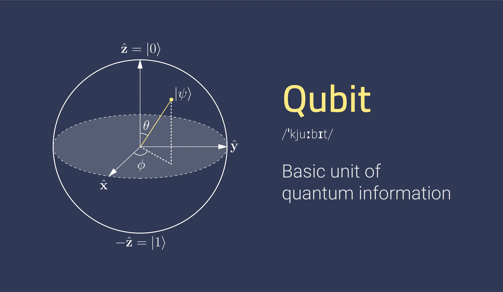

Qubits & Circuits Quantiques
L'informatique quantique nous propulse dans un univers fascinant régi par les lois de la mécanique quantique, bousculant les fondements du calcul traditionnel. Alors que les ordinateurs classiques s'appuient sur des bits binaires (0 ou 1), l'informatique quantique introduit les qubits (bits quantiques). Ces éléments quantiques possèdent la propriété étonnante de la superposition, pouvant exister simultanément dans un état 0 et un état 1. Grâce à ce principe, un seul qubit peut explorer une multitude de possibilités à la fois, décuplant ainsi sa puissance de calcul par rapport à un bit classique.
Circuits Quantiques : Les chefs d'orchestre du calcul quantique
Les circuits quantiques jouent un rôle crucial dans l'informatique quantique, semblables aux programmes informatiques du monde classique. Ils représentent des séquences d'opérations quantiques, appelées portes quantiques, appliquées aux qubits pour les manipuler et les faire interagir. Ces portes quantiques, à l'image de leurs homologues classiques (ET, OU, NON), effectuent des opérations logiques sur les qubits, modifiant leur état et les faisant évoluer vers un état final.
Fonctionnement d'un circuit quantique
- Initialisation : On définit l'état initial des qubits, généralement l'état |0> (zéro) pour tous les qubits.
- Application des portes quantiques : Les portes quantiques sont appliquées successivement, enchaînant des opérations logiques (Hadamard, CNOT, etc.) sur les qubits, les faisant évoluer et créant des enchevêtrements quantiques (corrélations instantanées entre plusieurs qubits).
- Mesure : La mesure de l'état final d'un ou plusieurs qubits permet d'obtenir le résultat du calcul. Cependant, la nature probabiliste de la mécanique quantique ne permet d'obtenir qu'une probabilité d'obtenir un certain résultat, nécessitant parfois des répétitions du circuit pour affiner la réponse.
Les promesses de l'informatique quantique

L'utilisation des circuits quantiques ouvre la voie à de nombreuses applications révolutionnaires et porteuses d'espoir dans des domaines variés :
- Briser le cryptage actuel : Certains algorithmes quantiques, comme Shor, pourraient rendre obsolètes les méthodes de cryptage actuelles, telles que RSA, utilisées pour sécuriser les transactions en ligne. Cela nécessiterait le développement de nouveaux protocoles cryptographiques plus résistants aux attaques quantiques.
- Accélérer la simulation de systèmes complexes : La modélisation de molécules complexes, de nouveaux matériaux ou de systèmes financiers pourrait être considérablement accélérée grâce à la puissance des circuits quantiques. Cela permettrait d'explorer de nouvelles pistes de recherche et de développement dans de nombreux domaines.
- Optimisation et logistique : L'optimisation de processus de production, de gestion des stocks ou de trafic routier pourrait être améliorée grâce à la capacité des circuits quantiques à explorer de nombreuses possibilités simultanément, permettant de trouver des solutions optimisées plus rapidement.
Les défis du calcul quantique
Malgré son immense potentiel, l'informatique quantique reste un domaine jeune et en développement, confronté à plusieurs défis :
- Décohérence : Les qubits sont extrêmement sensibles aux perturbations de leur environnement et peuvent perdre leurs propriétés quantiques très facilement, ce qui peut compromettre le bon déroulement du calcul.
- Contrôle des qubits : Manipuler et maintenir les qubits en superposition sur de longues durées est une tâche complexe qui nécessite des technologies de pointe et des environnements contrôlés avec précision.
- Algorithmes quantiques efficaces : Développer des algorithmes quantiques performants et adaptés à des problèmes concrets est un enjeu de recherche majeur. Il ne suffit pas de transposer simplement des algorithmes classiques
L'informatique quantique est un domaine en plein essor qui a le potentiel de révolutionner de nombreux aspects de notre vie. Cependant, de nombreux défis doivent encore être surmontés avant que cette technologie puisse atteindre son plein potentiel. La recherche et le développement dans ce domaine sont très actifs et il est probable que de nouvelles percées importantes seront réalisées dans les années à venir.